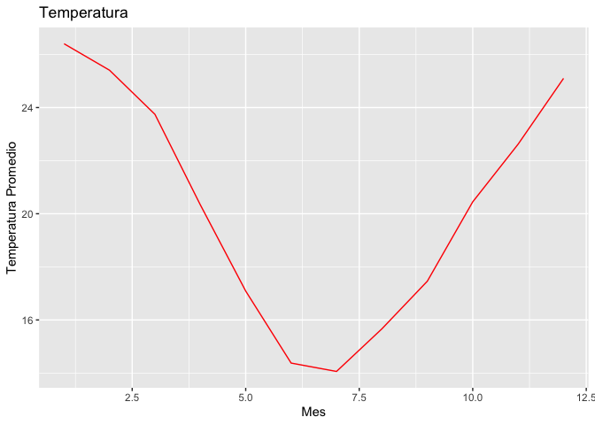

El objetivo de este paquete es a partir de un conjunto de datos sobre datos meterologicos y diferentes funciones poder sacar diferentes conclusiones dependiendo de nuestros ambiciones.
Instalación
You can install the development version of DataFocus from GitHub with:
#install.packages("pak")
pak::pak("Execortesi/DataFocus")
#> ℹ Loading metadata database✔ Loading metadata database ... done
#>
#> ℹ No downloads are needed
#> ✔ 1 pkg + 31 deps: kept 26 [3.9s]Funciones
-
descarga-lee-Datos: Toma el parametro que le pasemos correspondiente a una estación meteorológica y permite la lectura y/o descarga del dataset de la estación que se solicite. -
grafico_temperatura_mensual: Recibe un data set con datos de una o mas estaciones y devuelve un grafico con el promedio mensual de la temperatura de abrigo a 150 cm. -
tabla_resumen_temperatura: Recibe uno o más data sets de las estaciones y devuelve una tabla de resumen de la temperatura de abrigo a 150 cm.
Uso de las funciones
NH0437 <- descargar_leer_datos_estacion("NH0437")
#> Descargando y leyendo el archivo de la estación 'NH0437' en el directorio
#> temporal.
library(ggplot2)
library(dplyr)
#>
#> Adjuntando el paquete: 'dplyr'
#> The following objects are masked from 'package:stats':
#>
#> filter, lag
#> The following objects are masked from 'package:base':
#>
#> intersect, setdiff, setequal, union
grafico_temperatura_mensual(NH0437, colores = "red", titulo = "Temperatura")
tabla_resumen_temperatura(NH0437)
#> # A tibble: 1 × 4
#> id min_temp max_temp mean_temp
#> <chr> <dbl> <dbl> <dbl>
#> 1 NH0437 2.1 36.3 20.2Autores del paquete
-Exequiel Cortesi: Estudiante de la Licenciatura en Ciencia de Datos en la Universidad Austral de Rosario.
-Bruno Carrara: Estudiante de la Licenciatura en Ciencia de Datos en la Universidad Austral de Rosario.
Como se puede comtribuir al paquete
Si deseas realizar contribuciones al paquete, ya sea para agregar mejoras, corregir errores o proponer nuevas funciones, segui los siguientes pasos:
-Fork y clona el repositorio: Haz un fork de este repositorio en tu cuenta de GitHub y clona el repositorio en tu máquina local.
-Realiza la contribución y hace un pull request: Realiza los cambios que consideres necesarios en tu copia del repositorio. Luego, abri un pull request a la rama principal del proyecto con una descripción clara del propósito de tu contribución.